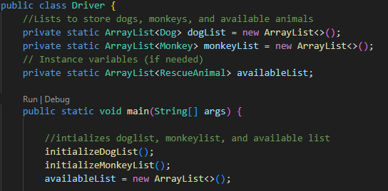
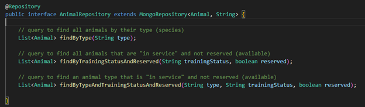
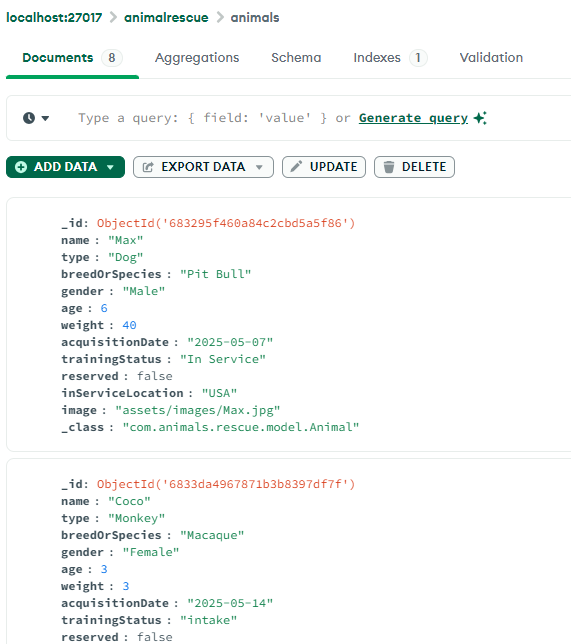
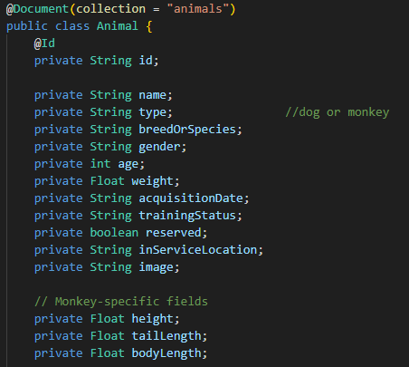
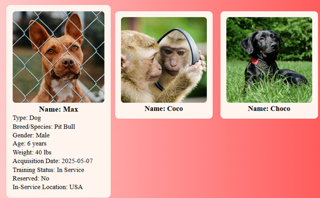

Category 3: Databases
The artifact I selected for this milestone is the same Rescue Animal Management System that I enhanced for Categories 1 and 2. It originally began as a Java-based console application developed in my IT-145 course. In that version, all animal records were stored temporarily in memory using ArrayLists. This meant that any time the program was closed, all data was lost. There was no true database or data persistence in place. Just temporary data structures used during runtime. While this allowed basic intake and reservation of rescue dogs and monkeys, it was not suitable for real-world use where data integrity and long-term storage are required.
Original Application Screenshot (Console-based):
To align with the Databases category, I enhanced the program by implementing a proper data persistence layer using MongoDB, a document-oriented NoSQL database. I used Spring Data MongoDB to map Java objects directly to MongoDB documents. I also redesigned the backend model structure by creating a unified Animal model that allows both dogs and monkeys to be stored together in a single collection. This made the system more flexible and scalable.
The Repository interface provides an abstraction layer that allows my application to communicate with MongoDB using standard method definitions, eliminating the need to write raw queries.
Spring Boot Repository Interface
Now, instead of losing data when the program stops, all animal information is permanently stored in the database and can be retrieved, updated, or queried across sessions and devices. The backend communicates directly with MongoDB to perform full CRUD operations.
MongoDB Animal Collection View:
Spring Boot Animal Model Code Sample:
I chose to include this artifact in my ePortfolio because it demonstrates my ability to design and integrate a real-world database into a full-stack system. It shows my understanding of data modeling, how to map Java objects to MongoDB documents, and how to handle important database concerns like validation, structure, and security.
During development, I encountered several challenges that I successfully solved. One issue involved how MongoDB handles ObjectId values. Originally, mismatches between ObjectId and String types created issues when retrieving or updating records. I resolved this by standardizing IDs as String throughout the entire full-stack system, ensuring consistency between the frontend (Angular) and backend (Spring Boot).
Another challenge was handling validation properly before storing records in MongoDB. Because MongoDB is schema-less, I used Spring Boot validation annotations such as @NotBlank, @Size, and others to ensure all incoming data was valid before being inserted into the database. I also implemented proper exception handling to display useful error messages when invalid data was submitted.
Application Frontend Showing Data Persisted from MongoDB:
Course Outcomes Demonstrated
This enhancement directly supports Course Outcome 3 by demonstrating my ability to evaluate storage solutions and implement scalable databases. It supports Course Outcome 4 by applying innovative modern tools like MongoDB, Spring Boot, and Spring Data. It also demonstrates Course Outcome 5 by focusing on secure data storage, validation, and integrity protection.
Overall, this enhancement transformed my application from a short-lived, memory-based program into a durable, full-stack, data-driven system that is scalable, reliable, and secure. It demonstrates my ability to build persistent systems that handle real-world data challenges and to design robust solutions using modern full-stack technologies.